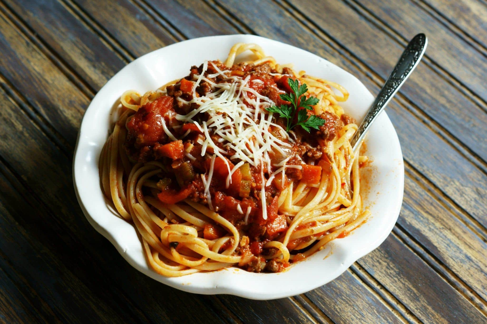

Spaghetti

Spaghetti: An Introduction
Spaghetti and Humanity. Name a better duo. Go on, I'll wait.
I waited a long time before typing this next sentence and I bet you didn't think of a better duo than spaghetti and humanity, did you? It is because this cannot be done. There is none. When the marinara touches the noodle it is as David reaches to God; Heaven shines half as bright as the plate of noodles at dusk.
Amen.
Ingredients
- 1 box of Noodles.
- Which noodles you choose speaks to who you are as a person
- I typically choose Angel Hair, but sometimes will choose Linguine.
- What does that say about me?
- One jar of Ragu pasta sauce.
- 3 big ol' shakes of parmesan powder cheese from the green plastic shaker bottles.
Instructions
- Fill a large pot with cold water. Salt lightly or not at all I never notice a difference.
- Bring said pot to a rolling boil.
- Add noodles to the boiling water. The length of time you need to boil them is probably written on the box they came in. I like to go for the al dente option.
- When the time is up drain the noodles in the sink. Try to use a strainer otherwise it's tricky.
- Open the jar of Ragu and pour all of it in, smacking the bottom of the jar just to be sure.
- Mix it up and then add Three (3) Big Ol' Shakes to the mix.
- Serve.
Home